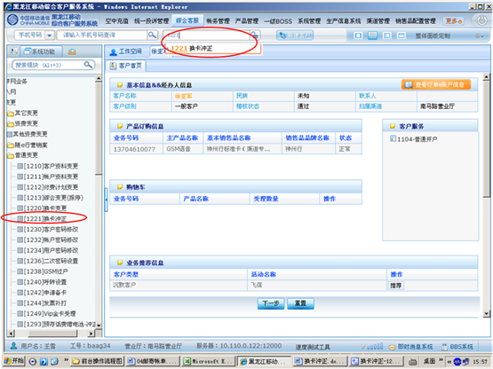
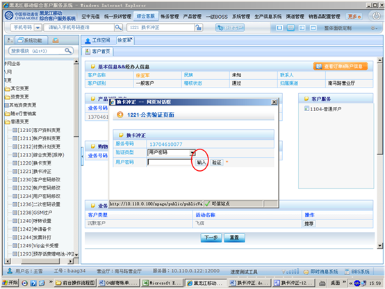
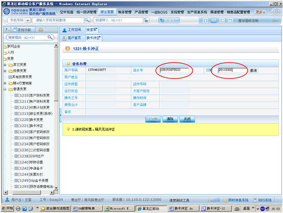
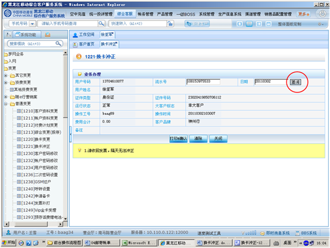
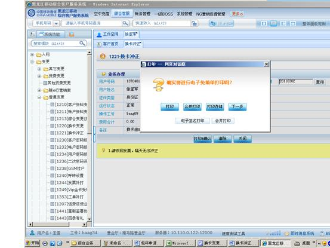

1、进入方式
在“请输入手机号码查询”处输入客户的手机号码，点击查询按钮，点击综合客服-普通变更-换卡变更，或在“快速转入”处输入代码1220进入换卡变更界面，点击“回车”确定。
2、界面形式及操作步骤说明
（1）在“请输入手机号码查询”处输入客户的手机号码，点击查询按钮，点击综合客服-普通变更-换卡变更，或在“快速转入”处输入代码1221换卡冲正，点击“查询”，点击“回车”确定。

（2）点击“输入”，由客户通过密码小键盘输入服务密码。

（3）输入换卡操作时的“流水号”及“受理日期”（流水号在换卡业务受理单上有显示，也可在综合客服-业务查询-营业员操作查询中查询，受理日期仅限当日）。

（4）点击“查询”。

（5）点击“打印&确认”，再根据客户本次是否办理多个业务，点击“打印”或“合并打印”或“打印存储”。

（6）点击“确定”提交本次操作。